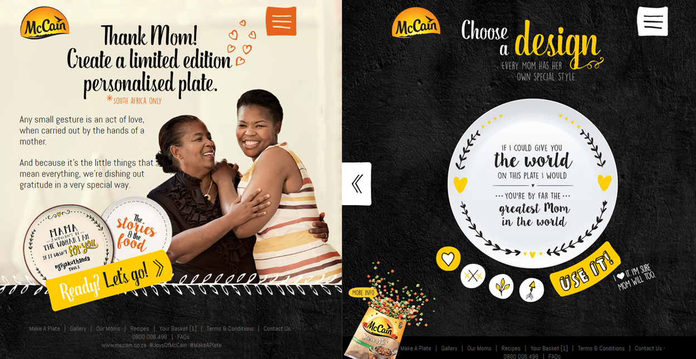
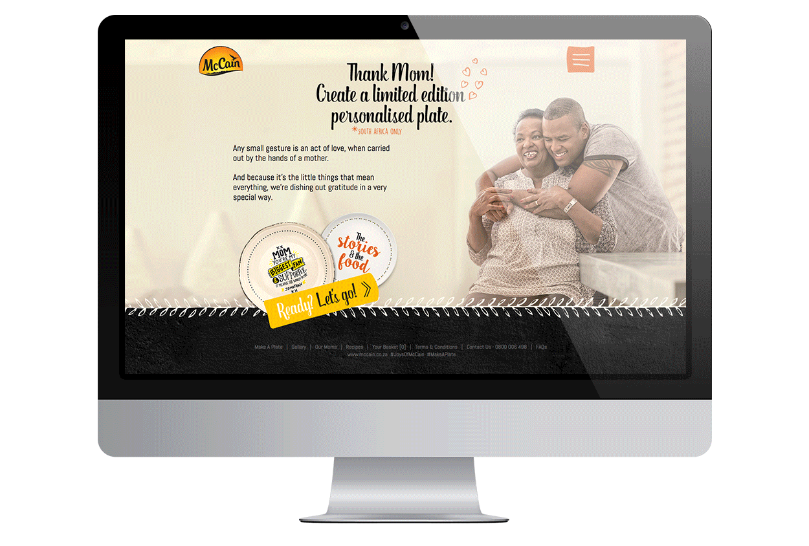
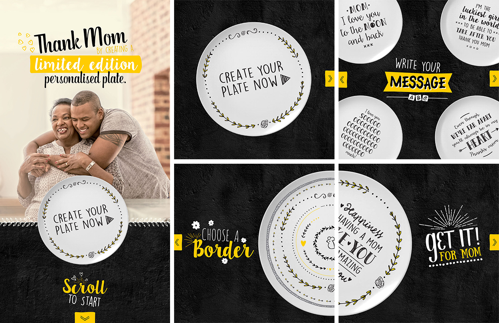
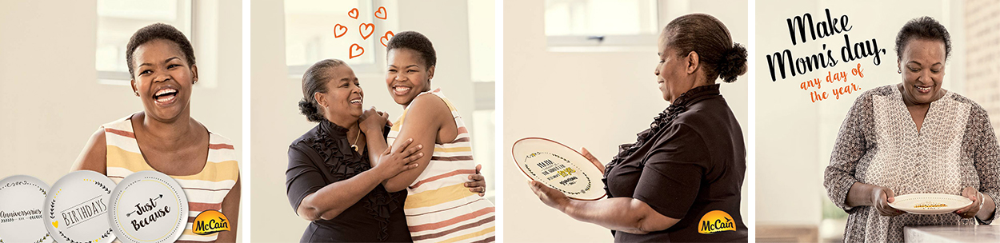
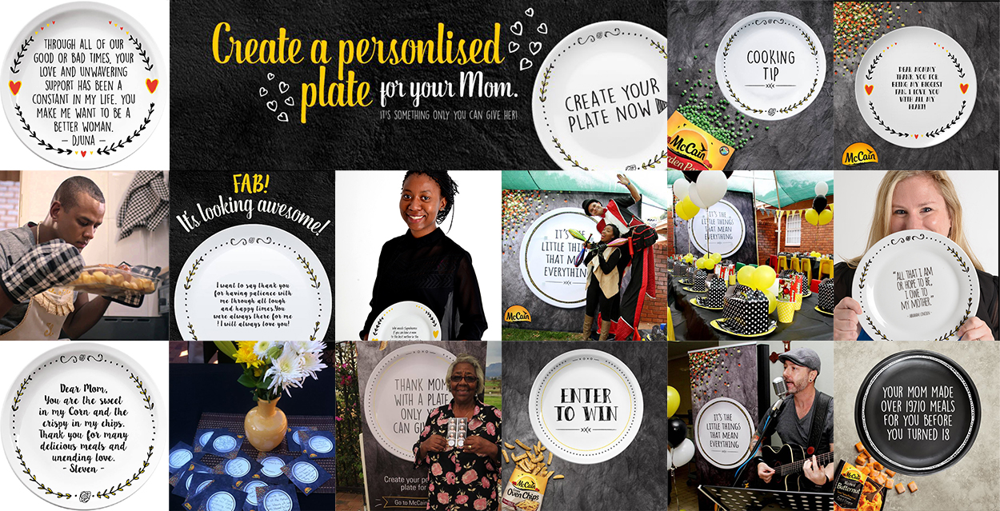

The brief:
In April 2017, McCain Foods South Africa launched its brand new ‘It’s the little things that mean everything’ campaign. The aim was to create emotional connections driven by authentic stories centred around family-time and joyful moments that are at the heart of the McCain brand. This campaign was focused on helping South Africans say thank you to their moms in a bold new direction for the brand.

The solution:
Three characters were chosen through a unique street casting process. Each were then given the opportunity to create a delicious surprise meal using McCain Veggie Sides, Stew Mix and Crispy Oven Chips to say thank you to their moms.
McCain wanted to add something unique and extra-special to the surprise and helped Jonathan, Jessi and Thuli create personalised plates for their moms. Each of the plates had a special message from them telling their moms how much they mean to them. The result in each case was an emotional and wonderful moment between mother and child as the message on the plate was revealed.

A typographical guide as well as a unique look and feel for the overall campaign from colour to illustration style was created. Through a complementary digital campaign the beautiful TV ads were given life online and allowed people the opportunity to pay homage to their moms by creating a memento like no other.
McCain then gave the rest of South Africa the opportunity to do the same and create their own beautiful personalised dinner plates for their moms. By going online to www.mccainjoys.co.za, users were able to choose from several designs, create their own personal message and then have it packaged and delivered to their moms. These plates were also made virtually shareable via different social media platforms.


McCain created the space for a unique personalised memory, sharable through social media with the following hashtags #JoysOfMcCain & #MakeAPlate. In line with the strategic communications the digital component saw conversations structured around the plate, customers’ stories and finally their shared meal.
All helping to seamlessly bridge the gap between offline and online through e-mailers, digital and social media advertising, branded social media pages and an SMS competition.
